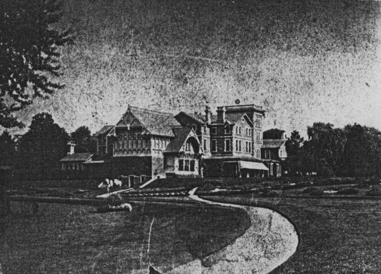
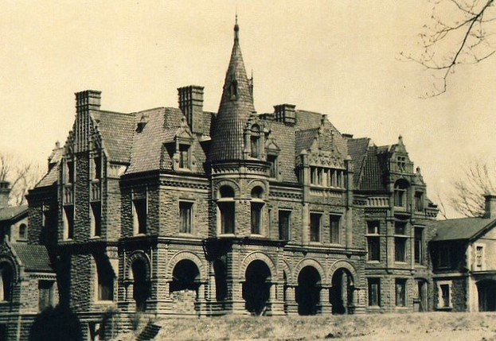
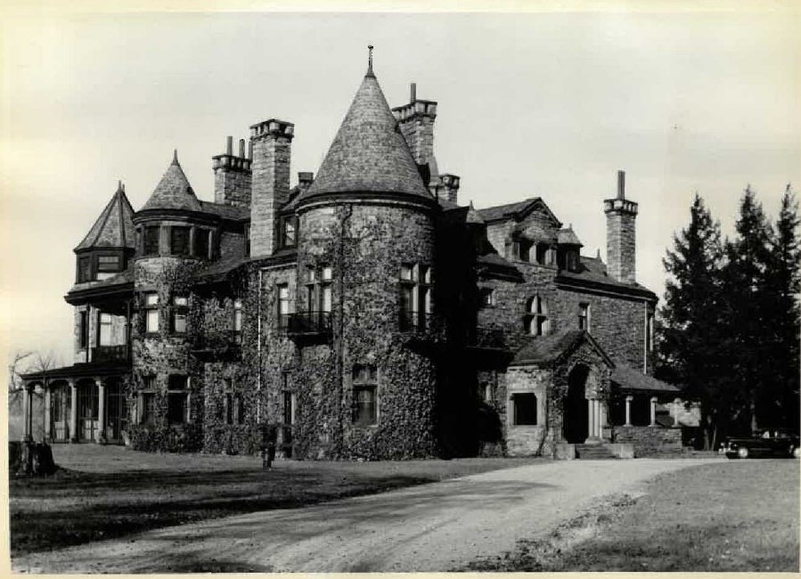
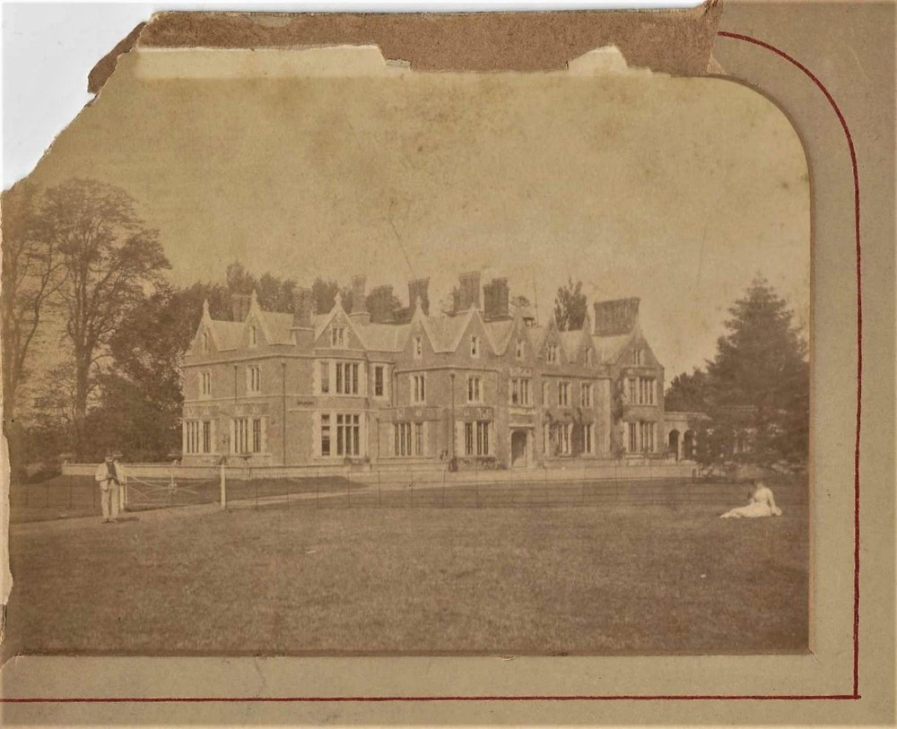
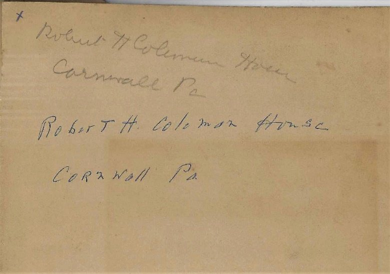
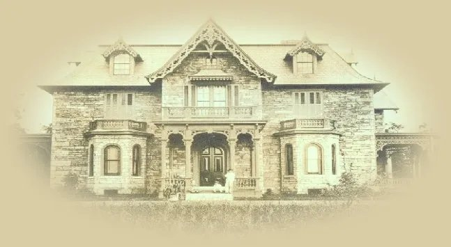

The mystery surrounding Robert H. Coleman's Cornwall mansions has energized local historians for decades. Among them, John and Margery Feitig conducted exhaustive research with hopes of writing a book, "Memories that Linger"; both died before achieving their goal but left a trove of research materials and several newspaper stories, "Mysteries that Linger."
The mystery, in brief: after Robert received his inheritance he began building, first a grand extension to his parents' "Cornwall Cottage" in 1877. Then, married to Lillie Clark in 1879, he undertook to build a "bridal mansion" on the Cornwall grounds. A year later she died and grief-stricken Robert tore down the incomplete mansion; the building materials dispersed to other buildings in Lebanon, including St. Luke's Episcopal church that same year. By the mid-1880s Robert remarried and began building another grand mansion, "Cornwall Hall," for his second wife Edith, one to rival the grandeur of his sister's "Crumwold Hall" in Hyde Park. Tragedy struck again; this second mansion was neither completed nor occupied before his financial demise in 1893. It was eventually torn down, as was the old Cottage, leaving Cornwall with several empty fields that now fail to arouse the attention of modern-day passersby.

Although photos and related evidence exist for the second mansion, the strange thing is that the first, bridal mansion left no evidence at all. No photographs, no architectural drawings, and very little correspondence exist. Questions abound as to where it was located and what it looked like.

Some confuse the two mansions and even wonder if the first ever actually existed. Feitig had produced a theory on its location as well as photographs of several surviving stones that lay as evidence among the trees.
The search for a complete story on the bridal mansion has been a subject of frequent discussion. At one point a photograph was presented by the Coleman family (of the Elizabeth Furnace lineage) to John Feitig, which has generated further controversy, until now.

The photograph claimed, by the inscription on the back, as attested by a Coleman descendant, the mansion was the "Robert H. Coleman house, Cornwall Pa." Several things did not sit well with local experts. First, the architecture was unlike the gothic revival style of other buildings in Cornwall, nor was the local terrain recognized. Second, the mansion was reportedly torn down before completion when Lillie died, whereas this photograph shows a completed structure with pristine grounds. Finally, the two individuals posing at leisure in the photo were not recognizable.

Acting on a hunch that the mansion was of British origin, local researcher Bruce Chadbourne threw the question to a contact in the UK, asking "do you recognize this picture?" An immediate reply came back identifying it as "Arborfield Hall" in Arborfield, Berkshire, just south of Reading, UK.
The original building dates back to the 13th century, with a connection to a member of the court of Henry VIII, and was rebuilt in 1837.
The question arises, "how then does this property connect to Coleman family history?" Craig Coleman of Elizabeth Furnace investigated and provided some insights. The Arborfield property was inherited by Elmira Reeves, whose husband was George Dawson. Their son, George Pelsant Dawson, would tear down the original building in 1832 and begin work on a new Arborfield Hall in 1837, only to sell it 5 years later, unfinished, to Sir John Conroy.
That answer explained not only the link to Arborfield but also the introduction of the Dawson name to the Coleman family. One of the Dawson cousins, also named George, was the father of Harriet Dawson, who married James Coleman (Robert Coleman's son), master of Elizabeth Furnace. Among the children of James and Harriet Coleman was George Dawson Coleman. He built the North Lebanon furnaces in the 1840s with his brother Robert and became the master of the Lebanon branch of the Coleman family, and the estate with several mansions on the hill now remembered as Coleman Memorial Park.
It's a shame that none of these mansions stand today, excepting Crumwold, which passed from the hands of the family decades ago.

For more Arborfield history see berkshirehistory.com and arborfieldhistory.org.uk.
Originally published on LebTown, November 28, 2023.